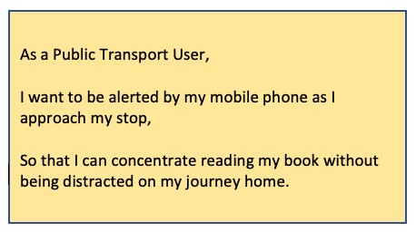

Plans & Progress
Background
“what if there was an app that provided you with an alert as you approached your station so that you could pay attention to other things.”
The concept of the Wake App Project was identified by our project team member, James Cheuk. While traveling home via the train, he met somebody who had fallen asleep on the train on his way home from work.
As a result, the individual had missed getting off his train station and ended up travelling to the end of the line. He was now required to backtrack and travel back to the station he originally planned to get off—this added an hour to his daily journey.
The idea of the Wake App was born through a light-hearted conversation between James and the traveller when he proposed the scenario; “what if there was an app that provided you with an alert as you approached your station so that you could pay attention to other things.”
Mobile devices already have input alarms based on time, but not distance or location. Utilising the inbuilt GPS capacity of a mobile device would trigger an alarm while travelling to a specified destination.
Current Phase of the Project
As at the time of submitting the assessment, the project team had navigated through the project's planned timeline detailed under section 3.7 of this report. The initial first week of developing the code for Wake App had commenced. Attached is a sample of the code that has been developed by the Lead Developer assigned to the project.
No unit testing had been completed on the code to determine if any issues or identify any defects.
Project Activities Completed
Project Scope
As a team, the initial decision we made was associated with the project's scope and what could be reasonably achieved over 15 weeks. While the boundaries of the features for Wake App could be endless, it was determined our focus should be limited to the following attributes:
- The start of the alarm would be set by the current GPS location of your mobile device
- A user would be able to search and select an address or specific location for an alarm to be triggered
- The App will use the default Map App of the operating system of your device
- Allow a user to be able to select a tone for the alarm. They would be able to choose one of five inbuilt tones in the App: and,
- Allow a user to select a distance between 150m to 1km they would like their alarm to be triggered before reaching your end destination.
These features formed the Minimum Viable Product (MVP) for the project and Wake App.
The project team considered additional features to be built for the App. Due to time constraints and collective inexperience of the team, it was determined that they were not necessary for the App's initial launch. This included allowing a user to:
- Search and select a start location for the alarm
- Select a mode of transport and/or public transport route: and,
- Choose their alarm tone from their music library.
User Experience Design of the App
Once the project's MVP was agreed upon, the next step undertaken was to develop how the user would interact with Wake App on their mobile phone. This was completed in 3 phases to ensure that it was simple to use and responded to their needs.
The first phase of the App's design was to discuss and agree on what the App should look like from a user perspective. This involved sketching out a rough user interface for a mobile phone, deciding on the number of tiles for the App and layout of the different features. These ideas were sketched to create a basic prototype and user interface.
The prototype and user interface allowed the project to proceed to the next stage of the project; user feedback. Drawing on the team’s friends and family, feedback was sorted on the App's design, the layout of the different features and ease of use.
This feedback allowed the team to refine the design of the App further. One critical piece of input incorporated into the design highlighted the user's current location when they opened the App.
The feedback received was used to finalise the design and create the below wireframes. These were used to provide greater clarity on the final design of the App from a development perspective.

Documentation of Functional Requirements
Following on from the wireframes development, the team began to document the App's functional requirements. The initial step undertaken was to outline a story map associated with all of the features to be developed.
Each feature on the storyboard was then taken and document into a requirement using the user story format. An example of a user story developed by the team is attached.
This work enabled the development of Wake App to commence in week 7 of the project.